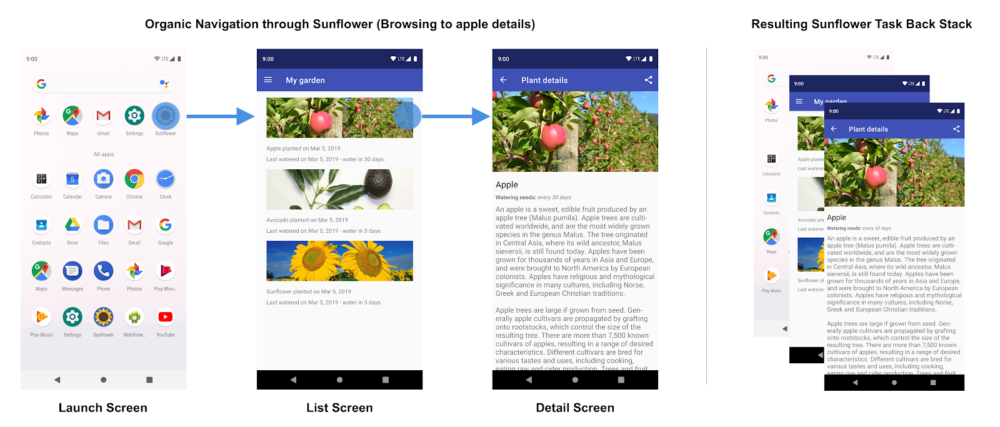

Unit 3.4 Android Navigation
Navigation refers to the interactions that let users navigate across, into, and back out from the different pieces of content within your app.
Key concepts
| Concept | Purpose | Type |
|---|---|---|
| Host | A UI element that contains the current navigation destination. That is, when a user navigates through an app, the app essentially swaps destinations in and out of the navigation host. | NavHost |
| Graph | A data structure that defines all the navigation destinations within the app and how they connect together. | NavGraph |
| Controller | The central coordinator for managing navigation between destinations. The controller offers methods for navigating between destinations, handling deep links, managing the back stack, and more. | NavController |
| Destination | A node in the navigation graph. When the user navigates to this node, the host displays its content. | NavDestinationTypically created when constructing the navigation graph. |
| Route | Uniquely identifies a destination and any data required by it. You can navigate using routes. Routes take you to destinations. |
Any serializable data type. |
| Back stack | A collection of destinations that the user has visited. The back stack allows users to navigate backward through their history of destinations. | NavBackStackEntry |
Set up the environment
To include navigation support in your project, add the following dependencies to your app's build.gradle file:
1 2 3 4 5 6 7 8 9 10 11 12 13 14 15 16 17 18 19 20 21 22 23 24 | |
Create a navigation controller
A NavController is the central component of the Navigation Architecture Component. It manages app navigation within a NavHost.
When using the navigation component with Jetpack Compose, you can create a NavController by calling the rememberNavController() function. This function creates and remembers a NavController instance that you can use to navigate between composables.
1 | |
Create a navigation host
Once you have a NavController, you can create a NavHost to host your composables and manage navigation between them. The NavHost is responsible for displaying the current destination and handling navigation actions.
Place your NavHost inside a composable function, typically within your app's main screen or activity.
1 2 3 4 5 6 7 8 9 10 11 | |
In this example, the NavHost is set up with two destinations: "home" and "details". The startDestination parameter specifies the initial screen to display when the app starts.
Navigate between destinations
To navigate between destinations, you can use the navigate() method of the NavController. You can call this method from within your composable functions, typically in response to user actions such as button clicks.
1 2 3 4 5 6 7 8 | |
You also can navigate to the previous destination using the navigateUp() method:
1 2 3 4 5 6 7 8 | |
The back stack
The NavController holds a "back stack" that contains the destinations the user has visited. As the user navigates to screens throughout your app, the NavController adds and removes destinations to and from the back stack.
In being a stack, the back stack is a "last in, first out" data structure. The NavController therefore pushes items to and pops items from the top of the stack.
These are the core facts you should consider regarding the behavior of the back stack:
- First destination: When the user opens the app, the NavController pushes the first destination to the top of the back stack.
- Pushing to the stack: Each call NavController.navigate() pushes the given destination to the top of the stack.
- Popping top destination: Tapping Up or Back calls the NavController.navigateUp() and NavController.popBackStack() methods, respectively. They pop the top destination off the stack.


The Up and Back buttons
The Back button appears in the system navigation bar at the bottom of the screen and is used to navigate in reverse-chronological order through the history of screens the user has recently worked with. When you press the Back button, the current destination is popped off the top of the back stack, and you then navigate to the previous destination.

The Up button appears in the app bar at the top of the screen. Within your app's task, the Up and Back buttons behave identically.
If a user is at the app's start destination, then the Up button does not appear, because the Up button never exits the app. The Back button, however, is shown and does exit the app.
When your app is launched using a deep link on another app's task, Up transitions users back to your app’s task and through a simulated back stack and not to the app that triggered the deep link. The Back button, however, does take you back to the other app.
If you want to navigate back, remember that you have the navigateUp() method in the NavController to handle Up navigation and the popBackStack() method to handle Back navigation.
Routes
A route is a string that uniquely identifies a destination in the navigation graph. You can define routes with enum classes for better type safety and organization.
1 2 3 4 5 6 7 8 9 10 11 12 | |
Navigation 3
Navigation 3 is a library that provides a more advanced navigation framework for Android applications. It builds upon the existing Navigation Architecture Component and offers additional features such as type-safe navigation, improved argument passing, and better support for complex navigation flows.
Navigation 3 improves upon the original Jetpack Navigation API in the following ways:
- Provides a simpler integration with Compose
- Offers you full control of the back stack
- Makes it possible to create layouts that can read more than one destination from the back stack at the same time, allowing them to adapt to changes in window size and other inputs.
You can find more information about Navigation3 in the official documentation: Navigation3.
Summary
In this unit, you have learned the basics of Android Navigation using Jetpack Compose. You have seen how to set up a navigation controller, create a navigation host, define destinations, and navigate between them using routes. With this knowledge, you can build more complex navigation flows in your Android applications.